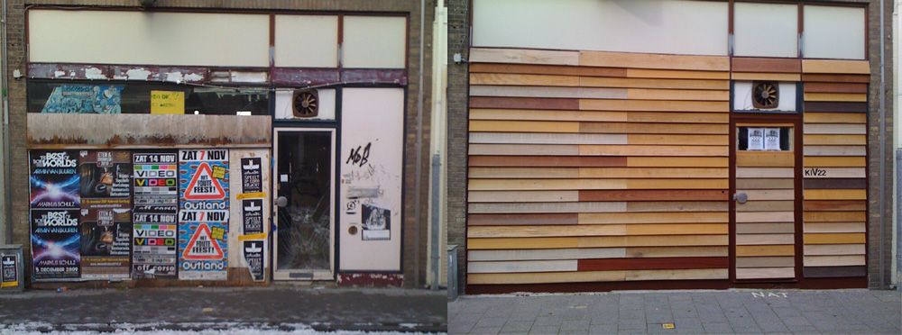

| < vorige | Terug naar overzicht |
Artist Initiative [KIV22] Baracca Vrieseweg 22 Dordrecht / 2010 - 2017
expo#11 15 juni 2012 Propaganda voor wat? met werk van Herman Lamers en Yvo van der Vat met performance The Youman en muziek door Vojkan Milosev flyer door vanHoning.nl
expo#10 30 april 2012 Herman Lamers en Yvo van der Vat work in progress tijdens koninginnedag
expo#9 9 september 2011 Baracca in KIV22 met werk van Martijn Koolstra, Micah Kessel, Twan Bastiaansen, Yvo van der Vat en Ibrahim R. Ineke met muziek door Okemog en de Rodox onder leiding van Hans Lagerweij
expo#8 29 mei 2011 Redaktiehuis Kunstcommando Manuela Porceddu, Nico Parlevliet, Jeroen Niemeijer en Yvo van der Vat
expo#7 28 mei 2011 Going Commando Zzaterdag met werk van Thijs Ebbe Fokkens, Nynke Gabeler,
Sander van Heerde, Ibrahim R. Ineke, Basten Stokhuyzen, Damian van der Velden en Alette Wttewaal
& music by Bird
expo#6 30 april 2011 Huiskamer voor praatjesmakers en zinzoekers Oscar Prinsen & Patrick de Leede expo en workshop Piepschuim
expo#5 11 maart 2011 Kunst in de maatschappij met gedoogsteun van de eigenaar met werk van Nico Parlevliet, Yvo van der vat, Bram Verbrugge, Martin de Vries, Robert de Visser, Ad Wesseling, Albert Zwaan, Rogier Bot, Ibrahim R. Ineke, Mattijs van Katwijk, J.A. Bernard Meijer, Anne/Mercedes Langhorst, John Fanning en muziek van Romeo Mayor
expo#4 24 sept. 2010 videotentoonstelling KIVVIDIN met werk van Seyit Battal Kurt, Frans van Lent, Yvo van der Vat, Ruveanne Gerrissen en Vojkan Milosev
expo#3 24 sept. 2010 222 LODGE EXTERN filmprogramma Yvo van der Vat & Martin Vink
expo#2 1 juli 2010 installatie & fotografie Martin Vink Islands
expo#1 23 mei 2010 installatie en fotografie van Yvo van der Vat New York versus Dordrecht namelijk
www.baracca.nl >
